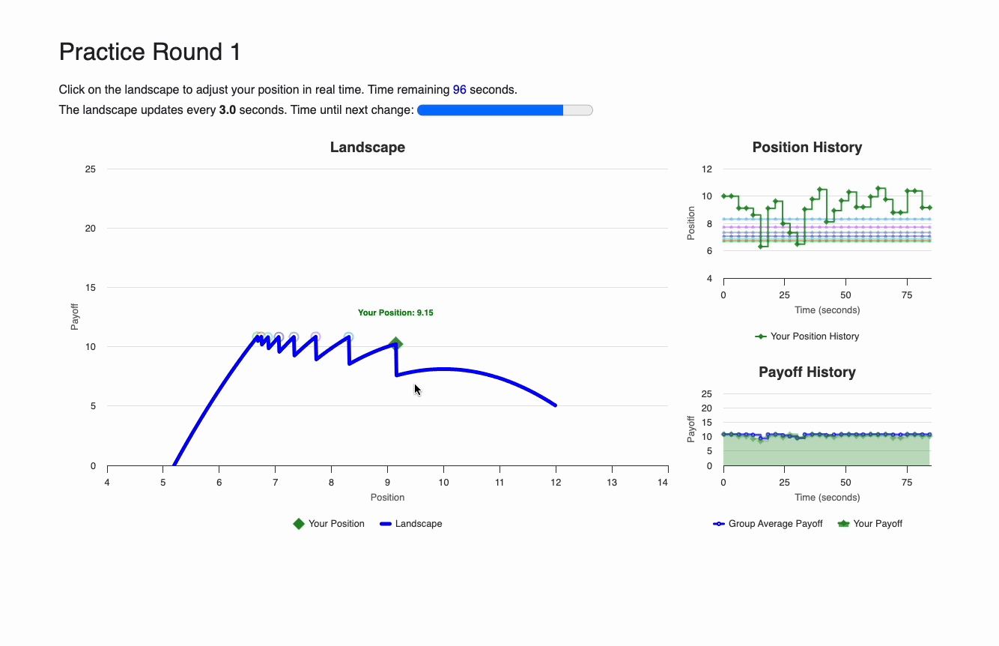

{{ block title }}Introduction{{ endblock }}
{{ block content }}

    <div class="card bg-light m-3">
    <div class="card-body">

{{ if player.round_number == 1 }}
    <p> Welcome to the experiment! </p>
    <p> Once you've completed reading the instructions, please select the "next" button to get ready to initiate the two-round practice game. The practice games are meant to help you get familiar with the official games, so they are <b>unpaid</b>.</p>  
    <div class="card bg-white m-5">
        <div class="card-body">
                <h5 style="color:Tomato;">Game Interface</h5>
                

    <p> <b>Your Action</b>: Click on <b>Landscape</b> to adjust your position. </p>
    <p> <b>Note</b>: Your new position will only be confirmed when you see the <b style="color:red;">red circle</b>.</p>
    </div>
    </div>  
{{ else }}

<p> Please select the "next" button to start the offical games. The official games contain 16 rounds, each lasting 150 seconds.</p>   
{{ endif }}
</div>
</div>

    {{ next_button }}

{{ endblock }}


